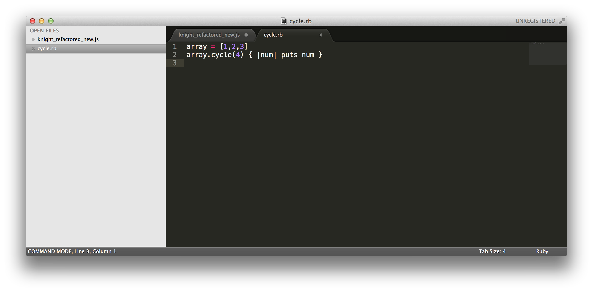
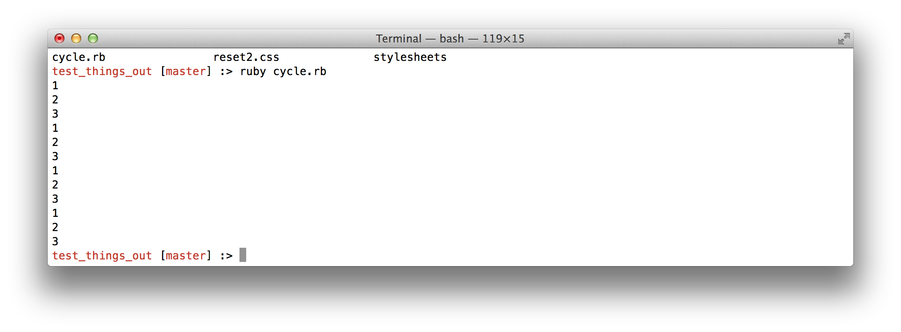
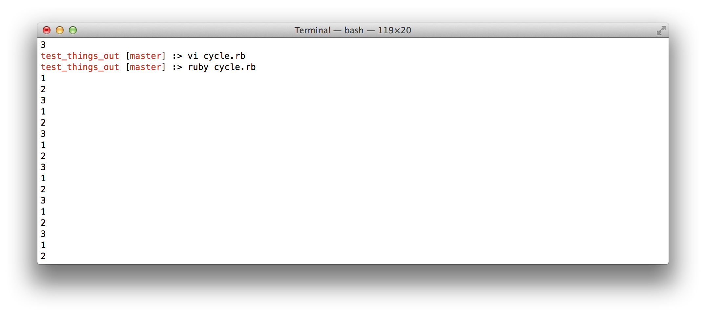
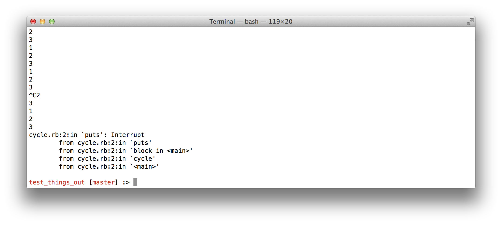

August
30
2014
The ruby enumerable class gives us many ways to work with collections. Today, let's look at the Enumerable:cycle method. In the simplest sense, cycle gives us a way to continually yield the elements of an object to a code block over and over. Cycle also has an optional argment, which specifies how many times the elements should be yielded to a code block. This in effect gives us a way to have a nested loop.
For example, if we create a small ruby program like so:
We see that cycle loops over the elements of array 4 times, as instructed:
However, if we leave off the argument, cycle loops indefinitely, as we can see from taking out the argument of 4:
This produces an unending loop of numbers on our screen:
Which we can only stop by hitting Control-c
We could also add code which would break out of the loop as well.